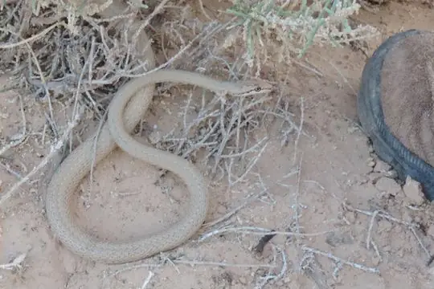
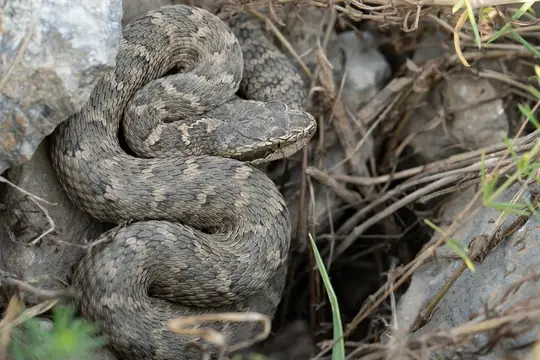
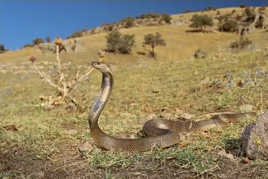
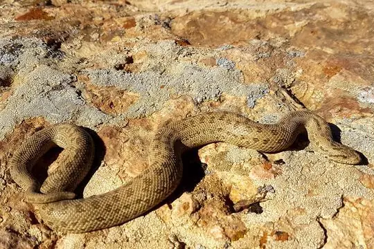

Snakes of Semnan
A state or province of Iran
8 snake species are recorded in Semnan, a state or province of Iran, in SnakeList: 3 venomous and 5 non-venomous, from 5 families.
- 8species
- 3venomous
- 5non-venomous
- 5families
SnakeList records where snakes live by country and by state or province, not by exact spot, so a species listed here may live in only part of Semnan. All snakes of Iran.
Most widely recorded
The species here that have research-grade iNaturalist records in the most places across their whole range - not just in Semnan. That shows how often people have photographed them, not how many live here.

Forskal Sand SnakePsammophis schokari Spotted Whip SnakeHemorrhois ravergieri
Spotted Whip SnakeHemorrhois ravergieri Wadi RacerPlatyceps rhodorachis
Wadi RacerPlatyceps rhodorachis- No photo yetDiadem SnakeSpalerosophis diadema

Caucasian pitviperGloydius caucasicus
Central Asian CobraNaja oxiana Indian Desert Tiger SnakeTelescopus rhinopoma
Indian Desert Tiger SnakeTelescopus rhinopoma
Central Asian Sand BoaEryx elegans
Snake families
Venomous and non-venomous
Venomous: 3Non-venomous: 5
2 are listed by SnakeList as dangerous to people: Caucasian pitviper Gloydius caucasicus, Central Asian Cobra Naja oxiana.
The other venomous ones have mild venom: no serious bites to people are documented for them.
Habitats (rough estimate)
How many of its living snakes have each kind of habitat in SnakeList’s estimate. That estimate comes from every country, state and province where each snake is recorded - not from a survey of Semnan, and not checked species by species.
Who described them
The scientists who first described its most widely recorded snakes, and when.
- Forskal Sand Snake Psammophis schokari -
- Spotted Whip Snake Hemorrhois ravergieri -
- Wadi Racer Platyceps rhodorachis -
- Diadem Snake Spalerosophis diadema -
- Caucasian pitviper Gloydius caucasicus -
- Central Asian Cobra Naja oxiana -
- Indian Desert Tiger Snake Telescopus rhinopoma -
- Central Asian Sand Boa Eryx elegans -
Names and dates come from SnakeList’s reviewed species accounts; the others are looked up on Wikidata (CC0) when this page opens.
Neighbouring states and provinces
Places in SnakeList that share a border with Semnan.
- Golestan 3 species
- Isfahan 8 species
- Mazandaran 4 species
- North Khorasan 1 species
- Qom 3 species
- Razavi Khorasan 6 species
- Tehran 9 species
- Yazd 2 species
All 8 species
- Caucasian pitviper Gloydius caucasicus venomous
- Central Asian Cobra Naja oxiana venomous
- Central Asian Sand Boa Eryx elegans
- Diadem Snake Spalerosophis diadema
- Forskal Sand Snake Psammophis schokari venomous
- Indian Desert Tiger Snake Telescopus rhinopoma
- Spotted Whip Snake Hemorrhois ravergieri
- Wadi Racer Platyceps rhodorachis
No snake here matches that.